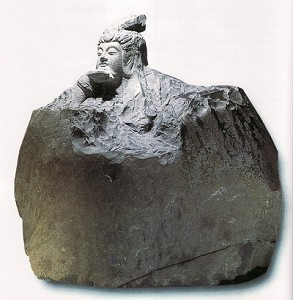
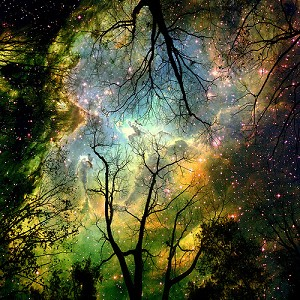

佛菩萨驻像吗?
冯冯
中国人社会的佛教圈，最舍得耗费巨资建造豪华寺庙与巨大佛像，这是违背原始佛陀的诫命的。佛陀多次告诫弟子不得建造豪华庙宇不得设像拜像，可是后世弟子反其道而行之，今日更甚，已经把佛教变成了崇拜偶像的迷信，把佛教正信的五戒八正道放在第二位，庙宇也流于商业化，有庙有像才可赚取大量香油金。
建大庙造大佛像，都说是为了弘法利众，又说众生不见庙像不生信心，这也是事实。一般人都不是用理智接受五戒八正道，而是必须见到庙宇与巨佛的庄严才生尊敬信心。
建庙造像，已经成为佛教圈风尚的竞赛，你耗资建造最高大佛，他付出亿兆元建造世界第一大寺庙，这种竞赛，方兴未艾。虽然说有助弘法扬教，无可厚非，有益观光事业，更是可喜，但是未免太奢侈豪华太浪费，也容易误导众生走向偶像崇拜，误以为佛就是庙中的泥偶木像。常听人说某处的大庙的观音菩萨很灵，某寺的佛很灵，这些人就是被误导以为观音是某寺的神灵，而不知观音菩萨无所不在，是一种存在于宇宙内外的伟大力量慈悲许愿寻声救苦，如阳光之辐射，无所不至，所以被称为日月如来观自在菩萨，并不是某寺或某庙独有专卖的。庙里的造像只是象征而已，绝非观音本身，菩萨既非肉身，也不是一个“灵”体，怎会有居住的需要？怎会只住定在一处庙宇？怎会贪图供桌上的供品与香火？也更不会因为接受了香火供品而曲佑任何人的不合理不合道德的祈求！再虔心拜求，神佛也不会保佑打劫银行或谋财害命。
抗战时期，内地常遭日本飞机轰炸。广东省会曲江市内有一座关帝庙，据说很灵验，每次日机空袭，民众很多就跪到关帝庙去躲避，相信关帝会保佑平安，一向也都无事。不料有一天，日机竟投炸弹袭击关帝庙，炸死了五百多人，关帝雕像也被炸毁了，可见得关帝并不住在庙中，神龛上供奉的也只是一座木偶。
台湾中部前几年六级大地震，座落于埔里山的一座佛寺，也被震坍了，佛像也被震毁了，电视新闻上看到庙与像都倒坍成为瓦砾，假如佛菩萨住在此庙，怎会如此？可见佛菩萨并不住庙，住庙的只是木偶泥像与庙祝罢了。
美国纽约有人在家中供奉一尊瓷制的观音像，说是曾请某某活佛开光的，家中养了只猫，十分淗气顽皮，常常跳上神桌去玩，有一天，淗气猫咪跳上神桌碰倒了瓷像，掉落地面，跌破了。主人吓得半死，深恐观音菩萨会降祸，又怕某某活佛责怪，就打电话来求救，此事我的解释如下：他们不应供奉容易打碎的瓷制观音像，应该供的是木刻或铜像，就不怕打 碎。瓷像是很漂亮，坊间有售，是广东石湾或江西景德镇的出品，瓷像神态栩栩如生，彩釉金边，是很高级精美的艺术品，猫咪不识欣赏，竟碰倒打碎，十分可惜。不过，也可见观音菩萨并不驻在瓷像上面，瓷像没有神灵，只是一件精美的制作艺术品而已。观音菩萨怎会小气到因此降祸于人？观音菩萨只有赐福与救苦救难，绝不会降祸于人的。何况观音瓷像到处是，被打碎的也必然不在少数，毕竟也只是泥土烧成的艺术品而已。好多洋人家中的角落都陈列一座佛像，也有放在卧室而对卧床的，观音怎会分灵去驻像？
至于活佛开光，更是笑话，佛菩萨是宇宙中的巨大能力法身，怎需渺小的人类来“开光”？“开光”是毫无作用的，只是一种仪式而已。比方说，某某百层大楼落成，请到蚂蚁来剪彩开光，活佛也只是凡夫俗子，并非法身，他替瓷像开光只等于小孩摸了玩偶，却照收红包，事过情迁，活佛为那么多人开光，哪会记得？怎会责怪打碎瓷像？活佛爷爷云游四海，到处忙碌，哪会计较这些小事？我劝那家人，不必恐惧，也别打猫咪，我劝他们用强力胶把瓷像补起来，或者另买木像或铜像供奉。
说了半天，都是否定偶像，也说明佛菩萨并不驻于偶像。那么，佛驻何处呢？简单！佛菩萨是以灵或力存在于宇宙的，虔诚祈念祂，实践佛法正信，佛力就降临于你心中，你并不需供奉膜拜偶像。古时候，南京牛头山的和尚，大雪天无柴火取暖，就把木造的佛像砍了当作柴来烧火，这是极端，但也说明和尚明白有相俱妄，一切造像都只是假托，学佛是不必拜像的。不过，大多数人仍然要见到佛像才能坚信，所以设像供像虽是违反原始佛教，倒也无可厚非，无须认真。
原载《佛网》网站
2000 年 ── 2002 年